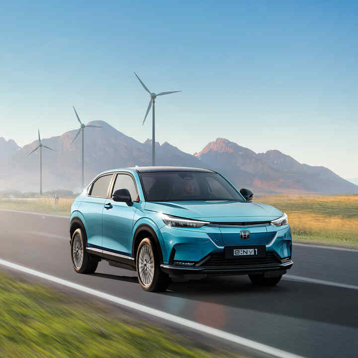

Az autózás árnyoldalai a modern világban
A mai rohanó világban sokan választják az autót, bízva abban, hogy gyorsabban célba érnek. 2025-re azonban ennek már több a hátránya, mint az előnye: reggelente hatalmas dugók alakulnak ki, miközben rengeteg szén-dioxid jut a levegőbe, súlyosbítva a globális felmelegedést. Pedig ma már léteznek környezetbarát alternatívák, például a vasúti közlekedés, amely Budapesten évente akár 60 ezer tonnával is csökkenthetné a károsanyag-kibocsátást. Az elektromos autók ugyan ígéretesek, de gyártásuk – főleg az akkumulátoroké – szintén terheli a környezetet. Csak 30–50 ezer kilométer után válik valóban fenntarthatóvá a működésük.
